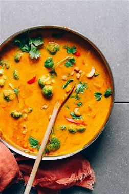

Pumpkin Curry with Lentils and Apples

Ingredients
Switch to Steps
-
2 1/2 cups Lentils
-
8 cups Water
-
1/5 tsp Tumeric
-
15 ml Canola Oil
-
1 Onion
-
2 Tomatoes, chopped
-
9 g Curry Powder
-
4 g Ground Cumin Seed
-
3 g Salt
-
1 g Black Pepper
-
1/2 g Ground Cloves
-
230 g Pumpkin, peeled and chopped
-
2 Potatoes, unpeeled and chopped
-
100 g Fresh Spinach, chopped
-
2 Carrots, peeled and diced
-
1 Apple, unpeeled, cored and diced
Steps
Switch to Ingredients
-
Place the lentisl in a pan with the water and tumeric.
-
Cook over medium-low heat until tender, about 45 minutes.
-
Drain, reserving 2 1/2 cups of the cooking liquid.
-
Meanwile, heat the canola oil in a large, deep pot over medium heat.
-
Stir in the onion and cook until tender and translucent, about 5 minutes.
-
Stir in the tomatoes and garlic and cook 5 minutes more, stirring occasionally.
-
Mix in the curry powder, cumin, salt, pepper, and cloves.
-
Add the cooked lentils, reserving cooking liquid, pumpkin, potatoes, and carrots.
-
Cover and cook over medium-low heat until the vegetables are tender, 35 to 45 minutes.
-
Stir in the spinach and apple, and cook until the pumpkin
can be easily pierced with a fork, about 15 minutes more.